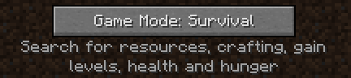
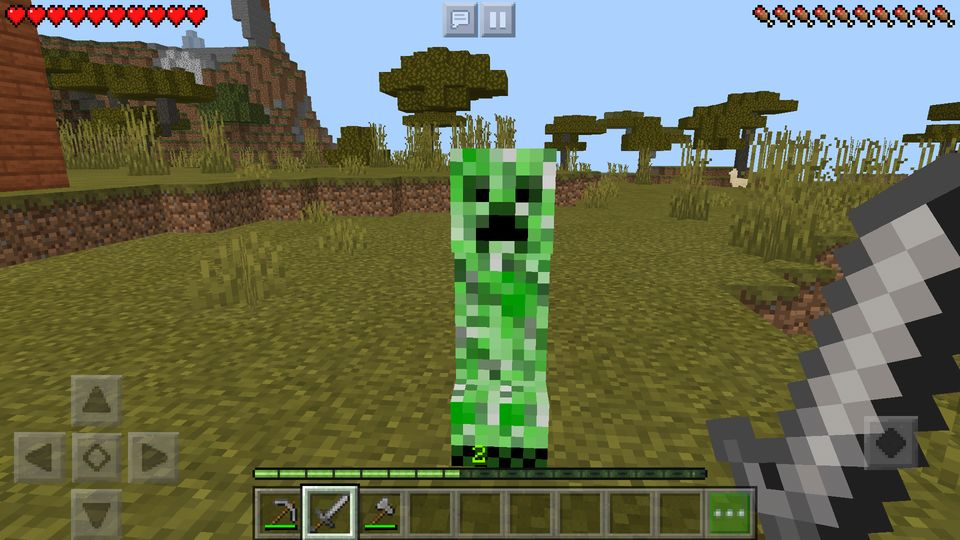
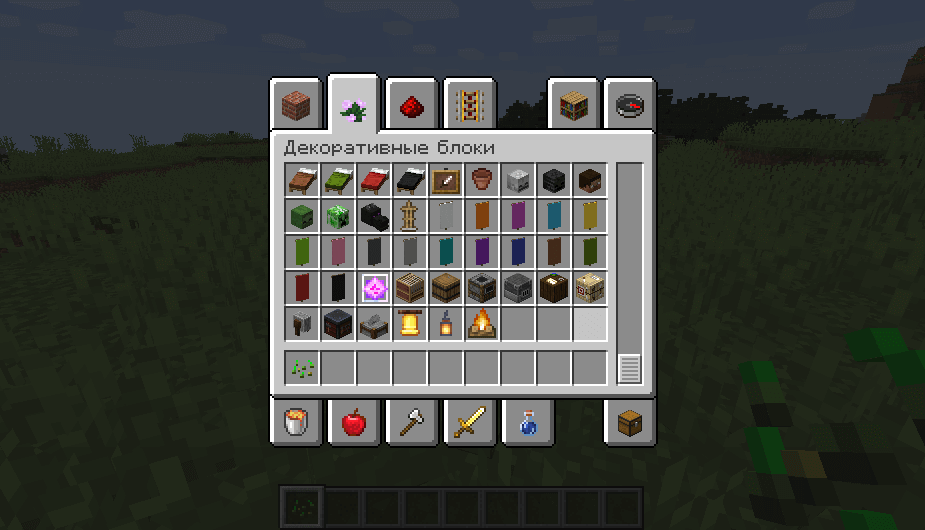
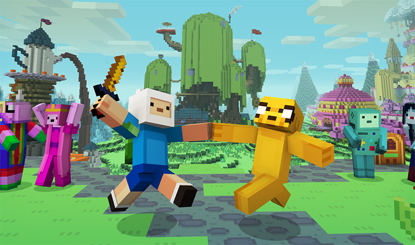
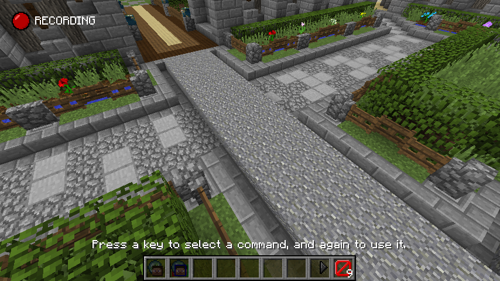
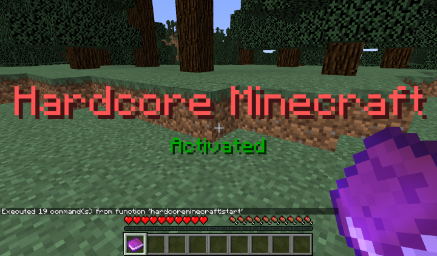

Режимите в майнкрафт са: сървайвъл, креативен, приключенски, наблюдателски, труден.
В този режим играчите трябва да съберат всичките си материали за изграждане, изработка на предмети и инструменти и трупане на точки за опит. Има здравословно, гладно и бронево поле, инвентар, а също и кислороден блок, когато е под вода, задушаващ се, [BE only] или в лава. [BE BE] играчът умира и се връща в точката на хвърляне на хайвера. След смъртта играчът изпуска дим, губи всички опитности и предмети и смъртно съобщение. Максималният обхват е 5 блока.
Играчът има достъп до безкрайно количество от почти всички налични блокове и предмети и може да ги унищожи незабавно. Играчите са неуязвими, освен ако не попаднат в празнотата, [само за Java Edition] и нямат здраве, броня или глад и могат да летят. Плейърът има достъп до елементи, които не са налични в режим Survival, напр. хвърлят хайвера си яйца. Играчът не може да види командни блокове, ако разглежда творческия графичен интерфейс - трябва да създаде командни блокове с командите / give или / setblock. Максималният обхват е 6 блока.
Играчите могат да взаимодействат с обекти като лостове и бутони и могат да взаимодействат с тълпи. Те обаче могат да разбиват блокове само с инструменти, които имат CanDestroy маркер за данни, и да поставят блокове само ако блокът, който държат, има маркер с данни CanPlaceOn, което прави този режим добър за приключенски карти. Максималният обхват е 5 блока.
Когато са в режим на зрител, играчите могат да прерязват блокове, да влизат в перспективата на други обекти, като щракват с левия бутон върху тях и са невидими за всички играчи и тълпи, с изключение на другите зрители. Играчът не може да взаимодейства с блокове, обекти или техния инвентар. Когато са в режим от трето лице, те приличат на прозрачна, плаваща глава без тяло. Играчът може да използва колелото за превъртане, за да регулира скоростта, с която лети, за разлика от летенето в творчески режим.
В този режим, който играе по същия начин като режим на оцеляване, нивото на трудност е постоянно настроено на "Hard" и когато играчът умре, единственият избор е картата да бъде изтрита или играчът да бъде изпратен за постоянно в зрителя режим.Технически Hardcore е модификатор на режим на игра, а не режим на игра. Без измама обаче е възможно да се получи само „Hardcore Survival“. За да получи режим "Hardcore Creative", играчът трябва да редактира света на играта с външни инструменти или отваряне към LAN и включване на мами. Почти няма видима разлика между „Hardcore Creative“ и „Non-Hardcore Creative“. Поради това "Hardcore" обикновено се отнася до "Hardcore Survival".
